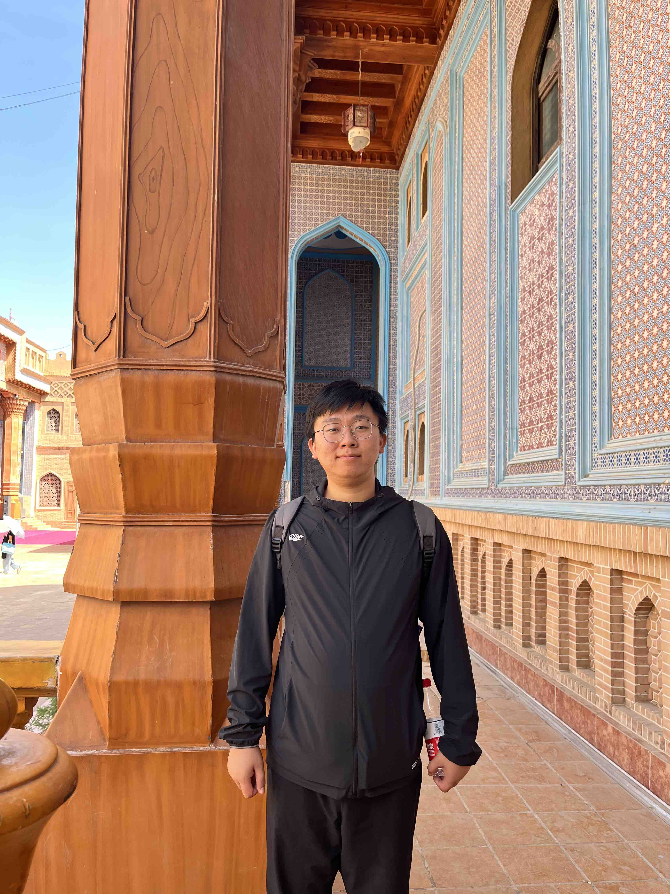

Wenxin Tai (台文鑫)PhD Candidate (2022-2026)ICDM Lab School of Software Engineering University of Electronic Science and Technology of China Email: moc.kooltuo [TA] iatxw [Google Scholar] [GitHub] |
 |
Short Bio
I am currently a PhD candidate in Software Engineering at the University of Electronic Science and Technology of China (UESTC), under the supervision of Prof. Ting Zhong and Prof. Fan Zhou. I received my BS degree in Communication Engineering in 2019 and my MS degree in Software Engineering in 2022, advised by Prof. Qiao Liu and Prof. Tian Lan.
My research focuses on controllable generative models and trustworthy artificial intelligence (TAI).
"The soul without imagination is what an observatory would be without a telescope." — Henry Ward Beecher
News
-
[2025-05] One paper accepted to ICML 2025 -- the Ship of Theseus has finally reached shore after 17 months at sea.
-
[2025-01] Supported by the Youth Talents Support Project -- Doctoral Student Special Program.
Selected Publications


Honors
-
Youth Talents Support Project -- Doctoral Student Special Program (China Association for Science and Technology)2025
-
Academic Rising Star of UESTC2024
-
Artificial Intelligence Challenge Runner-up (GNN-based Interpretable Community Detection Track), hosted by www.people.com.cn2023
-
National Scholarship2023
-
Best Student Paper Award of the 24th IEEE International Conference on Mobile Data Management (MDM)2023
-
Artificial Intelligence Challenge Runner-up (Dialog Generation Track), hosted by www.people.com.cn2022
-
Excellent Master's Thesis of UESTC2022
-
Sichuan Outstanding Graduates2022
-
National Scholarship2021
Services
-
Conference Reviewer: ICML, NeurIPS, ICLR, KDD, theWebConf, AISTATS
-
Journal Reviewer: TKDE, TNNLS, TITS, TNSE, TKDD
Last update: July 2025